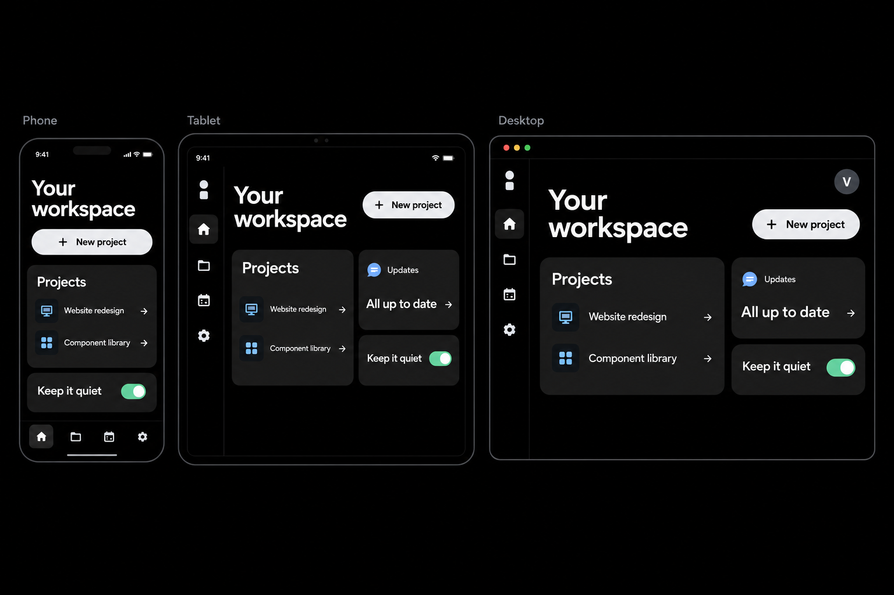
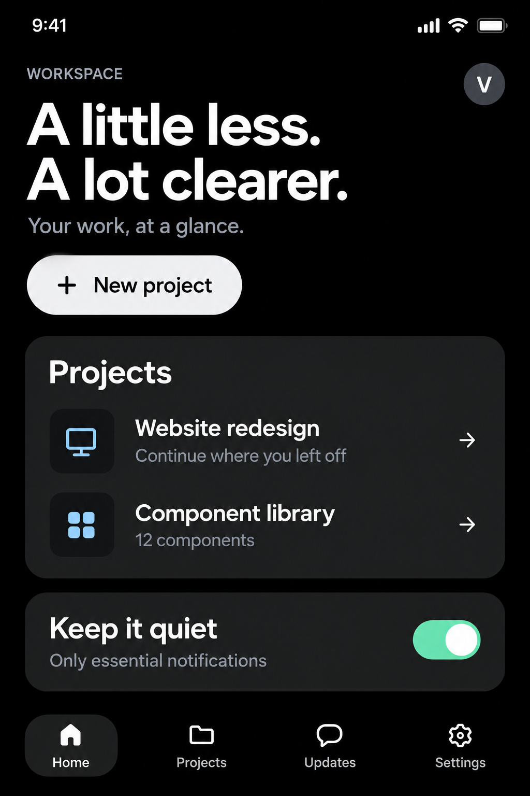
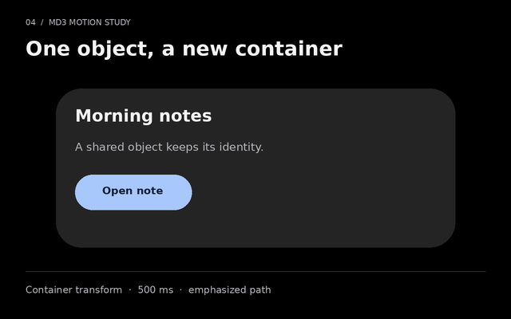
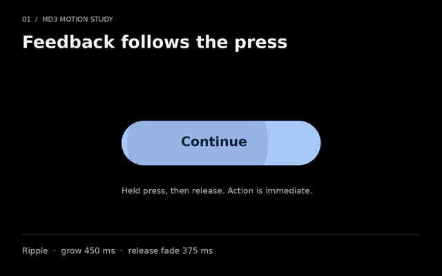
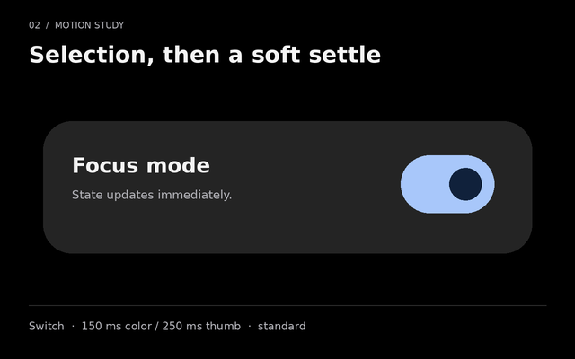
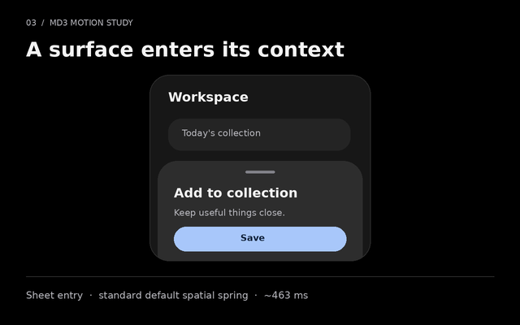
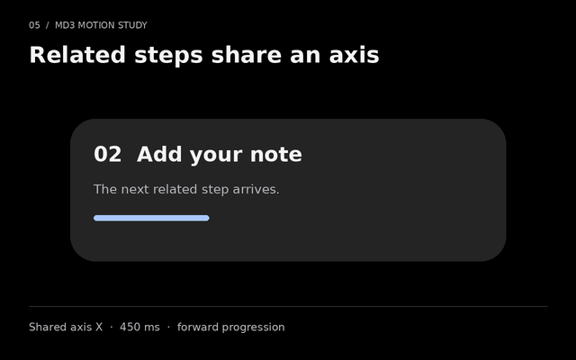
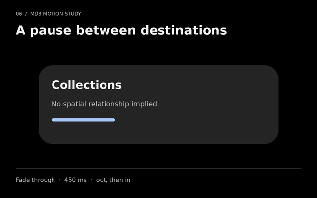
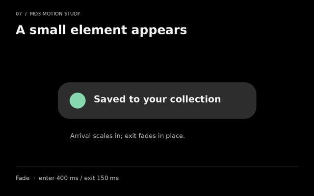

LESS NOISE. MORE INTENTION.
A little less.
A lot clearer.
A quiet foundation for everything you build.
Design principles01
Everything has
a purpose.
Space to focus. Room to breathe.
Keep it quiet
Reduce interface motion
Pure black. Soft surfaces. Clear intent.Integration guide ↗
01 / FOUNDATIONS
Start with less.
Every value has a role. Tokens keep the whole system in tune.
Color
Background
#000000The canvas, always black.
Surface
#242424Cards and grouped content.
Surface high
#2D2D2DElevated panels and dialogs.
Text
#F4F4F4The strongest reading layer.
Primary
#A8C7FASelected and focused states.
Accent
#86D9AEA small, deliberate highlight.
TYPE / SYSTEM SANS
Aa
Clear at every size.
Large headings set the rhythm. Body text stays comfortable. Small text still needs contrast.
- Display
- 56 / 61.6 px
- Headline
- 36 / 45 px
- Title
- 24 / 30 px
- Body
- 16 / 25.6 px
- Caption
- 12 / 19.2 px
SHAPE & SPACE
Soft, never vague.
162440Pill
Use 32 px on compact cards, 40 px on spacious cards, and pill shapes for short actions.
4
8
16
24
32
48
Build on a 4 px grid. Let content determine the height.
Three responsive modes
Compact · < 600 px
Start at 320 px: one column, three key destinations plus More, and 20 px page padding.
Medium · 600-839 px
Use 32 px page padding and a navigation rail. Stack complex panels when space is limited.
Expanded · ≥ 840 px
Use 48 px page padding. Add columns when content fits; widen workspaces from 1200 px.
02 / THE COMPONENT LIBRARY
Every piece.
One quiet language.
36 Material Design 3 component families. Explore the controls, try their states, and take the markup into your project.
Component coverage & platform guide ↗Actions help people move their work forward.
Buttons
Filled · tonal · elevated · outlined · textChoose one prominent action per area. Every label names what happens next.
Button groups
Standard · connectedGroup related actions without making people hunt for the next step.
Floating action button
Small · default · largeKeep the most important screen action within reach.
Extended FAB
Icon + labelAn explicit label gives a prominent action more context.
FAB menu
Related actionsOpen related creation actions. Escape closes the menu and restores focus.
Icon buttons
Standard · filled · tonal · outlinedTry the toggles. Each icon has a name that stays available to assistive technology.
Segmented buttons
Single · multiple selectionOne view
Include files
Arrow keys move through the group. Single selection keeps one choice active.
Split button
Action + optionsThe main action stays immediate; adjacent options remain a separate choice.
Badges
Small · largeA quiet signal attached to the destination it describes.
Loading indicator
Default · containedReady when you are.
Shape changes indicate ongoing work. Reduced motion keeps a clear, static loading state.
Progress indicators
Linear · circularTry indeterminate progress
Determinate progress shows how much is done. Indeterminate progress shows that work continues.
Snackbar
Message · actionYour draft is in the workspace.
Undo restores the draft. Messages remain available until you dismiss them.
Tooltips
Plain · richA short, useful hint.
One set of decisions.
Shared tokens keep colors, spacing and motion consistent across your product.
Hover or focus for a plain hint. Open a rich tooltip when the explanation needs an action.
Cards
Filled · elevated · outlinedA place for related ideas.
One clear subject, with room for a useful action.
View foundations →Elevated
A raised surface.
Outlined
A subtle boundary.
Bottom sheets
Standard · modalDrag the handle or use its button to expand and collapse supporting details.
Side sheets
Standard · modalKeep additional details beside the task, with a modal option when focus matters.
Dialogs
Basic · confirmation · full screenFocus stays inside a modal dialog. Escape closes it and focus returns to the opener.
Dividers
Full width · inset · verticalFull width
Inset
DesignEngineering
Use a divider only where spacing alone does not make the relationship clear.
Lists
One · two · three lines- Design notes
- Component libraryUpdated a moment ago
- Team conversationA few thoughtful updates.
Catch up at your own pace.9:30
Text, leading content and trailing actions align across rows.
Carousel
Multi-browse · hero · uncontained · full screen
Less noise.
A black canvas keeps the focus on your work.

More room.
The same clarity, in the palm of your hand.

Clear intent.
Motion explains what changes.
Hero layout
Less noise.
A black canvas keeps the focus on your work.
More room.
The same clarity, in the palm of your hand.
Clear intent.
Motion explains what changes.
Uncontained layout
Less noise.
A black canvas keeps the focus on your work.
More room.
The same clarity, in the palm of your hand.
Clear intent.
Motion explains what changes.
Full-screen layout
Less noise.
A black canvas keeps the focus on your work.
More room.
The same clarity, in the palm of your hand.
Clear intent.
Motion explains what changes.
Swipe, use the arrow buttons, or use the keyboard. Content never advances automatically.
Navigation bar
Three destinationsA compact destination bar keeps the main sections close at hand.
Navigation rail
Compact · expanded layoutUse the same destinations when a wider window gives navigation more room.
Navigation drawer
Standard · modalA drawer makes room for more destinations and longer labels.
App bars
Small · center · medium · large · bottomMedium, large, and bottom bars
Make room for focus.
A quieter workspace.
Place the screen title, navigation and relevant actions in a predictable space.
Tabs
Primary · secondary · scrollableOne project. Shared focus.
Use left and right arrow keys to move between tabs.
All caught up.
This panel keeps the selected context together.
A place for your files.
This panel keeps the selected context together.
Secondary tabs
One project. Shared focus.
Use left and right arrow keys to move between tabs.
All caught up.
This panel keeps the selected context together.
A place for your files.
This panel keeps the selected context together.
Connected content stays in one place while the selected panel changes.
Toolbars
Docked · floating · verticalVertical toolbar
Arrow keys move through tools; Tab moves out of the toolbar.
Checkboxes
Selected · unselected · mixedThe parent checkbox reflects the choices below, including a mixed state.
Radio buttons
One choice from a groupSwitches
On · off · disabledUse a switch for a setting that takes effect immediately.
Date pickers
Single · range · modalTry a date range
Move through days with arrow keys, or switch to text entry.
Time pickers
Dial · input · 12 / 24 hourTry a 24-hour clock
Choose on the dial or enter a precise time from the keyboard.
Menus
Menu · exposed dropdown- Private
- Team
- Public
Arrow keys move between options. Type to find a choice. Escape returns to the trigger.
Search
Search bar · search viewThe focused search view keeps suggestions near your query.
Chips
Assist · filter · input · suggestionAssist and suggestion
Filter
Input
VishalDesign team
A small form reflects the job: trigger, filter, selected value, or suggested reply.
Sliders
Continuous · discrete · rangeBoth range handles are keyboard accessible and keep a valid lower and upper bound.
Text fields
Filled · outlined · multilineUse a name your team will recognize.
For example, name@example.com
Multiline, error, read-only, and disabled states
What will this project help people do?
Enter a valid email address.
This value is set by the workspace.
Labels stay visible as you type. Supporting text explains what the field needs.
Avatars
Companion patternVDSIdentity at a glance.
Accordion
Companion patternWhat is included?
Shared tokens, reusable controls, interaction patterns and platform adapters.
How do I get started?
Include the stylesheet and initialize the small enhancement module.
Read the guide ↗Inline alerts
Companion patternEverything is up to date.
Your workspace is ready.
Connection interrupted.
Your draft is still available here.
Skeletons
Companion patternData tables
Companion pattern| Project | Owner | Status |
|---|---|---|
| Website redesign | Design team | In progress |
| Component library | Engineering | Ready |
Breadcrumbs
Companion patternPagination
Companion patternShowing items 1-10 of 30.
Empty states
Companion patternA fresh start.
Create your first project to bring everything together.
No matches yet.
Try a shorter search or choose another category.
03 / MATERIAL DESIGN 3
Motion with meaning.
A complete motion vocabulary. Choose the movement that explains the change.
STATE & FEEDBACK
A contained response.
A state layer and ripple acknowledge the press, remain while held, then fade after release.
SPATIAL & EFFECTS
Give change a place.
The sheet uses MD3’s standard spatial spring for position and an effects spring for opacity.
Four transition patterns.
Container transform connects a card to its details. Shared axis describes a spatial relationship. Fade through changes destinations. Fade introduces or dismisses an element.
Project
A quieter workspace.
The starting point.
Project details
Room for the important things.
A connected view keeps the context. Your selection updates immediately, and movement explains the relationship.
Summary view
Choose an axis for forward/back navigation. Play again to return. New input cancels unfinished visual motion.
Standard or expressive.
Standard keeps recurring interactions calm. Expressive can give a prominent moment more character. Effects springs keep opacity and color within their limits.
Standard motion is the default.
The motion contract.
Complete foundations
16 duration slots, seven easing families, and standard and expressive spring schemes. Context determines which one belongs.
Coordinated
Motion connects origin and destination. Spatial and effects channels use their appropriate curves or springs.
Optional movement
System and local reduced-motion settings stop decorative animation. Focus, selection, and actions remain immediate.
Small motion studies.
Static until you choose Play. Each GIF runs once. Reduced motion keeps the still image.

Contained ripple
MD3 motion study · plays once

Switch selection
MD3 motion study · plays once

Bottom sheet
MD3 motion study · plays once
Container transform
MD3 motion study · plays once

Shared axis
MD3 motion study · plays once

Fade through
MD3 motion study · plays once

Fade
MD3 motion study · plays once
Illustrative diagrams, not recordings of native components. GIF frame timing is quantized; the runtime uses the shared motion contract. Timings and downloads ↗
04 / EVERY SCREEN
One language.
Room to adapt.
Start with the phone. Carry the same clarity to tablets, desktops, and native apps.
Use it anywhere.
Semantic HTML, reusable CSS, and optional JavaScript. Works with your framework on phones, tablets, and desktop browsers.
Web integration ↗Built for touch.
Jetpack Compose theme and starter components. Native Material 3 controls with shared colors, shape, and spacing.
Android starter ↗Familiar on Apple.
A SwiftUI package for iOS, iPadOS, and macOS. Native navigation, sheets, Dynamic Type, and Reduce Motion.
SwiftUI starter ↗Across platforms.
A Material 3 theme and adaptive shell for Android, iOS, web, Windows, macOS, and Linux through Flutter.
Flutter starter ↗MOBILE FIRST, BY DEFAULT
Give every action room.
48-unit touch targets. Safe-area padding. Flexible text. A useful reading order before another column appears.
Size the layout to the available window, including tablet split view and desktop resizing. The screen name never decides the layout.
Read the responsive rules ↗Shared decisions. Native behavior.
One token source exports CSS, TypeScript, JSON, Kotlin, Swift, and Dart. Platform controls retain their keyboard, touch, focus, and accessibility conventions.
| Mode | Width | Layout | Page inset |
|---|---|---|---|
| Compact | Below 600 | Single column | 20 |
| Medium | 600-839 | Rail, stacked content | 32 |
| Expanded | 840-1199 | Content-led columns | 48 |
| Wide | 1200+ | Workspace + supporting pane | 48 |
Native SDK builds and Flutter interaction tests pass CI. Device and assistive-technology reviews remain pending. The platform guide lists exactly what is implemented and what maps to native controls.
Platform contracts & coverage ↗05 / PATTERNS
Familiar by design.
Use a small set of repeatable decisions across every screen.
A focused workspace
One page title, one primary action, a small collection of related cards. Put navigation where it stays predictable.
See the workspace →A form that helps
Persistent labels. A clear order. Useful examples. Validate on submit, keep entered values, and focus the first error.
A deliberate decision
Name what will happen. Give destructive actions a clear confirmation and a safe way out.
A clear state
Loading, empty, error, and success are part of the design. Explain what happened and what someone can do next.
Explore feedback →Ready to integrate
Use the shared tokens and CSS in any web framework. Add the small JavaScript module for tabs, dialogs, ripples, and snackbars. Native controls keep their platform behavior.
<link rel="stylesheet" href="styles/quiet-material.css">
<script type="module">
import { initQuietMaterial } from './src/quiet-material.js';
const cleanup = initQuietMaterial(document);
</script>06 / ACCESSIBILITY
Quiet. For everyone.
Clarity is a behavior, not just a color palette.
Readable contrast
Text aims for WCAG AA contrast. Essential control boundaries and focus rings stay visible, even where decorative borders are absent.
Color alone never communicates status.
A keyboard path
Tab follows the reading order. Arrow keys move through tabs and native choices. Escape closes dialogs, popovers, and tooltips.
Room to interact
Standard controls have 48 px targets. Touch labels expand the hit area. Content wraps, and text can grow without clipping.
At small sizes, simplify the layout before shrinking controls.
Control over motion
Reduced motion suppresses decorative transitions and ripples. Decorative motion plays on request. Progress animation appears only while work is in progress.
Review motion behavior →Accessibility is an ongoing check.
This system provides accessible foundations. Each product still needs keyboard, screen reader, zoom, contrast, and assistive-technology testing in its own context. An automated check is not a conformance certification.
Read the testing checklist ↗